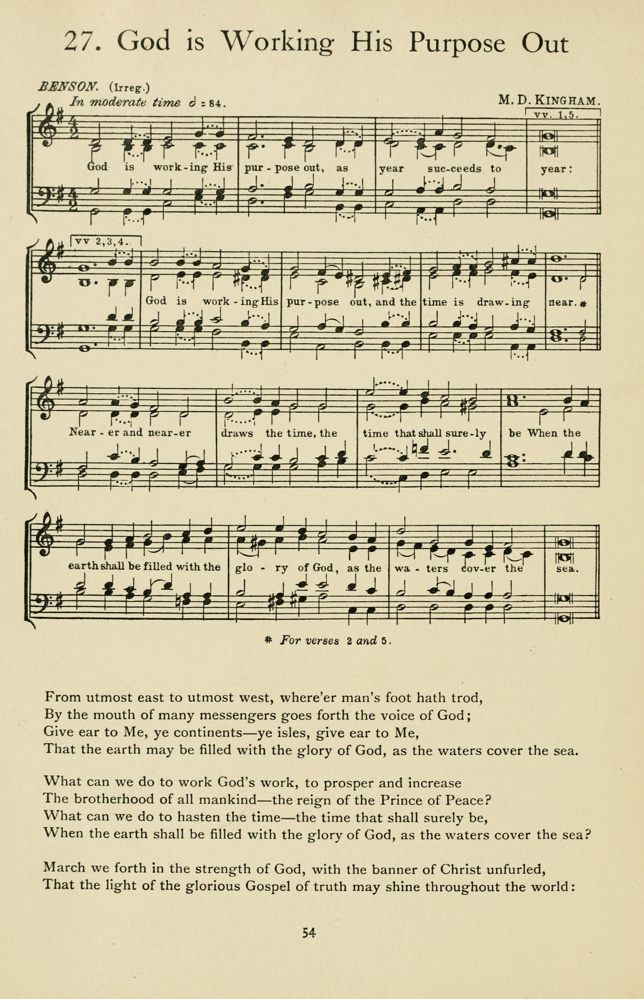

1146 There is No Disappointment in Heaven _F.
M. Lehman SE Samonte
|
¡@ |
¡@ |
|
¡@1 There¡¦s no disappointment in Heaven,
No weariness, sorrow or pain;
No hearts that are bleeding and broken,
No song with a minor refrain.
The clouds of our earthly horizon
Will never appear in the sky,
For all will be sunshine and gladness,
With never a sob or a sigh. Refrain:
I¡¦m bound for that beautiful city,
My Lord has prepared for His own;
Where all the redeemed of all ages
Sing Glory! around the white throne;
Sometimes I grow homesick for Heaven,
And the glories I there shall behold;
What a joy that will be when my Savior I see,
In that beautiful city of gold.
2 We¡¦ll never pay rent for our mansion,
The taxes will never come due,
Our garments will never grow threadbare,
But always be fadeless and new,
We¡¦ll never be hungry or thirsty,
Nor languish in poverty there,
For all the rich bounties of Heaven
His sanctified children will share. [Refrain]
3 There¡¦ll never be crepe on the doorknob,
No funeral train in the sky;
No graves on the hillsides of glory,
For there we shall nevermore die.
The old will be young there forever,
Transformed in a moment of time;
Immortal we¡¦ll stand in His likeness,
The stars and the sun to outshine. [Refrain]
Source: The Cyber
Hymnal #6618
|
¡@ |
|
¡@ 
https://hymnary.org/hymn/SSSH1989/page/42
 |
|
¡@ |
¡@ |
 There is No Disappointment in Heaven SE Samonte
There is No Disappointment in Heaven SE Samonte
¡@
|
Short Name: |
Frederick M. Lehman |
|
Full Name: |
Lehman, Frederick M., 1868-1953 |
|
Birth Year: |
1868 |
|
Death Year: |
1953 |
Frederick Martin Lehman,
1868-1953
Born: August 7, 1868,
Mecklenburg, Schwerin, Germany.
Died: February 20, 1953, Pasadena, California.
Buried: Forest Lawn Memorial Park, Glendale, California.
Lehman emigrated to
America with his family at age four, settling in Iowa, where he lived most
of childhood. He came to Christ at age 11, as he relates:
One glad morning about
eleven o¡¦clock while walking up the country lane, skirted by a wild
crab-apple grove on the right and an osage fence, with an old white-elm gate
in a gap at the left, suddenly Heaven let a cornucopia of glory descend on
the eleven-year old lad. The wild crab-apple grove assumed a heavenly glow
and the osage fence an unearthly lustre. That old white-elm gate with its
sun-warped boards gleamed and glowed like silver bars to shut out the world
and shut him in with the ¡¦form of the fourth,¡¦ just come into his heart. The
weight of conviction was gone and the paeans of joy and praise fell from his
lips.
Lehman studied for the
ministry at Northwestern College in Naperville, Illinois, and pastored at
Audubon, Iowa; New London, Indiana; and Kansas City, Missouri. The majority
of his life was devoted to writing sacred songs; his first was written while
a pastor in Kingsley, Iowa, in 1898. He wrote and published hundreds of
songs, and compiled five song books. In 1911, he moved to Kansas City, where
he helped found the Nazarene Publishing House.
--www.hymntime.com/tch
¡§NO DISAPPOINTMENT IN HEAVEN¡¨
¡§And they sung as it were a new song before the throne¡K¡¨ (Rev.
14:3)
INTRO.:
A
song which talks about that eternal home in which the redeemed along with the
angels will sing a new song before the throne is ¡§No Disappointment in Heaven¡¨
(#405 in Sacred
Selections for the Church). The text was written and the tune was
composed both by Frederick Martin Lehman (1868-1953). Born at Mecklenburg in
Schwerin, Germany, he emigrated to America with his family at age four, and they
settled in Iowa, where he spent most of his childhood. After studying at
Northwestern College in Naperville, IL, he served as a minister with Nazarene
Churches at Audubon, IA; New London, IN; and Kansas City, MO. The majority
of his life was devoted to writing sacred songs; his first was written while
living at Kingsley, IA, in 1898. Producing and published hundreds of songs, he
compiled five song books.
In 1911, Lehman moved to Kansas City, where he helped found the Nazarene
Publishing House. Hymnary.org lists
eleven of his songs which appear in the books used for their data base.
Judging from the number of appearances, the most famous of these is ¡§The Love of
God¡¨ beginning ¡§The love of God is greater far.¡¨ Next popular would be
¡§There¡¦s no disappointment in heaven,¡¨ which he wrote in 1914 at Chicago, IL,
while suffering financial reverses. The harmony was provided by his
daughter Claudia Faustina Lehman Mays, who was born on July 15, 1892, at
Griswold, IA. One of nine children, she harmonized many of her father¡¦s
songs, including ¡§The Love of God.¡¨
Marrying and having two children, Claudia was in later life an active member of
two Covenant churches where her son was minister, the first in Monrovia, CA, and
the second at Somerset West in Portland, OR. She died on Feb. 19, 1973, at
Medford, OR. Lehman¡¦s third most popular hymn, ¡§The Royal Telephone,¡¨
beginning, ¡§Central¡¦s never busy, always on the line,¡¨ which has appeared in
none of our books besides Special
Sacred Selections. Later, Lehman moved to Pasadena, CA, where he
eventually died. Among hymnbooks published by members of the Lord¡¦s
church, ¡§No Disappointment in Heaven¡¨ appeared in the 1978 Songs
of Praise edited by Reuel Lemmons. Today it may
currently be found in the 1971 Songs
of the Church edited by Alton H. Howard, as well as Sacred
Selections and the 2009 Favorite
Songs of the Church edited by Robert J. Taylor Jr.
The song describes the beauties and glories of heaven in contrast with the pain
and sorrow of this earthly life.
I. Stanza 1 says that there will be no sorrow or pain in heaven
¡§There¡¦s no disappointment in heaven No weariness, sorrow or pain;
No hearts that are bleeding and broken, No song with a minor refrain.
The clouds of our earthly horizon Will never appear in the sky,
For all will be sunshine and gladness, With never a sob or a sigh.¡¨
-
The picture of the New Jerusalem says that there will be no sorrow nor pain:
Rev. 21:4
-
Since minor keys are often associated with sadness, there will be no minor
refrain because the songs will all be in praise to Christ: Rev. 5:8-10
-
Since clouds are also associated with sadness, there will be nothing but the
sunshine of Christ¡¦s light there: Rev. 21:23
II. Stanza 2 says that there will be no poverty in heaven
¡§We¡¦ll never pay rent for our mansion, The taxes will never come due,
Our garments will never grow threadbare, But always be fadeless and new,
We¡¦ll never be hungry or thirsty, Nor languish in poverty there,
For all the rich bounties of Heaven His sanctified children will share.¡¨
-
Jesus has gone to the Father¡¦s house to prepare mansions or dwelling places
for His people: Jn. 14:1-3
-
The garments that will be worn there will be robes made white in the blood
of the Lamb: Rev. 7:9-14
-
While we understand that heaven is a spiritual place, its grandeur is
described in terms of great wealth to emphasize that there will be no
poverty there: Rev. 21:19-21
III. Stanza 3 says that there will be no death in heaven
¡§There¡¦ll never be crepe on the doorknob, No funeral train in the sky;
No graves on the hillsides of glory, For there we shall nevermore die.
The old will be young there forever, Transformed in a moment of time;
Immortal we¡¦ll stand in His likeness, The stars and the sun to outshine.¡¨
-
In former days, it was a custom to put black crepe ribbon on the doorknob of
a home where a death had taken place, but there will be no funerals nor
graves in heaven because we shall never die: Jn. 11:26
-
The old will be young there forever, because when the Lord returns, the
righteous dead shall be raised incorruptible and the righteous living will
be transformed or changed in a moment of time to become immortal: 1 Cor.
15:51-53
-
Then, we shall outshine and outlast the stars and the sun: Dan. 12:2-3
CONCL.:
The chorus continues to express the desire for the eternal home in heaven.
¡§I¡¦m bound for that beautiful city, My Lord has prepared for His own;
Where all the redeemed of all ages Sing ¡§Glory!¡¨ around the white throne;
Sometimes I grow homesick for Heaven, And the glories I there shall behold;
What a joy that will be when my Savior I see, In that beautiful city of gold.¡¨
The word ¡§anachronism¡¨ is defined as ¡§The assigning of an event, person, etc.,
to a wrong, especially an earlier, date; something out of its proper time.¡¨
The beloved ¡§Little House¡¨ books by Laura Ingalls Wilder, and the famous
television show Little
House on the Prairie of the late 1970s and early 80s based
upon them, are both about events that occurred from 1871 to 1889. However,
I recall that on one of the television programs, a ¡§faith healer¡¨ came to the
community where the Ingalls lived, and at his healing services, the melody of
¡§There¡¦s No Disappointment in Heaven¡¨ was played on the organ over and over
again¡Xeven though that song would not be composed until at least 34 years later,
in 1914! That is an anachronism. However, it does not take away from
the fact that the Christian can look forward to that time when there will be ¡§No
Disappointment in Heaven.¡¨
https://hymnstudiesblog.wordpress.com/2020/08/28/784270/
Words: Frederick Martin Lehman (b. Aug. 7, 1868; d. Feb.
20, 1953)
Music: Frederick Lehman, with harmony by his daughter,
Claudia Faustina Lehman Mays (b. July 15, 1892; d. Feb. 19, 1973)
Links:
Wordwise Hymns
The Cyber
Hymnal
Hymnary.org
Note: Frederick Lehman was born in Germany. His family moved to the
United States in 1872, at first living in a little one-room log cabin in
Iowa. He trusted Christ as his Saviour in boyhood, and went on to a long
and active ministry as a pastor, an editor, a gospel song writer and
music publisher. He gave us the beautiful hymn The Love of
God.
Hundreds of years ago the word ¡§disappointment¡¨ meant: to
remove from office, as in: the senator broke the law, so he lost his
appointed position. Today, the word describes feelings and attitudes
when someone lets us down, or something fails meet our expectations.
There is a sense of loss involved, and perhaps we feel sadness, or
frustration over it. In the wake of a disappointment, we can also be
discouraged and lose hope for the future.
In Greek mythology, Tantalus is said to have displeased the gods. As
a punishment, he was condemned to stand forever in a pool whose waters
fled whenever he stooped to drink. Above his head was a tree bearing
luscious fruit, but the branches always shifted away when he reached for
some. It becomes an apt parable of perpetual disappointment.
In our lives, many expectations carry with them such a possibility.
That¡¦s because we¡¦re dealing with fallible human beings, in a broken
world. Peggy Noonan is an acclaimed author and columnist with the Wall
Street Journal. Years ago she served as a speech writer for President
Ronald Reagan. But she wrote more recently, ¡§Don¡¦t fall in love with
politicians, they¡¦re all a disappointment. They can¡¦t help it, they just
are.¡¨
So, is there anything positive about these painful feelings? Yes,
there can be. And Noonan¡¦s words illustrate it. Perhaps our hopes need
to be adjusted to reality. To think that voting one man or woman into
office is going to solve society¡¦s ills is naive. We need to temper our
expectations with a better knowledge of how things are. Politicians are
only human after all, and they often have to deal with complex problems
for which there is no perfect solution.
Disappointment tests our goals and values, to show whether they need
to be refined. In that sense, it can become a blessing in disguise. If
we are able to learn from the past and get a better understanding of
future possibilities, the present may become a bridge between
disappointment and renewed hope.
Church ministry has its own challenges and struggles. Bob Dale, a
pastoral ministry consultant, notes that there are three particular
periods in a clergyman¡¦s ministry that are often especially difficult.
The first comes early on, when some of the idealistic dreams of seminary
days are hit by a dose of reality. The second comes around age forty,
when the pastor realizes he hasn¡¦t reached many goals he set for
himself. And the third comes later, when he faces the insecurity of
retirement years.
Pastor Frederick Lehman was going through some of these things at the
age of forty-six. He and his family were apparently facing some
financial troubles. In addition, he says, ¡§As I sat disconsolately at my
desk one Monday morning, after a particularly disappointing Sunday,
Satan helped me to count my disappointments.¡¨
These thoughts may be what the Bible describes as ¡§fiery darts of the
wicked one,¡¨ darts of disappointment and blame. Against them, we are to
raise up ¡§the shield of faith¡¨ for our protection (Eph. 6:16)¡Vfaith in
the great promises of God. When Pastor Lehman did that, he reports, ¡§The
Spirit flashed a picture into my brain of what a Christian¡¦s prospects
were to be after this life is over. Like a panorama I saw beyond the
disappointments in this vale of tears.¡¨
The book of Revelation describes some of the things that will be
missing in heaven: sorrow, crying, pain, and death (Rev. 21:4). The
trials of this life are put in perspective as we contemplate the
blessings to come (II Cor. 4:17). As he thought on these things, Lehman
took up his pen and wrote words and melody for a gospel song called No
Disappointment in Heaven.
CH-1) There¡¦s no disappointment in heaven,
No weariness, sorrow or pain;
No hearts that are bleeding and broken,
No song with a minor refrain.
The clouds of our earthly horizon
Will never appear in the sky,
For all will be sunshine and gladness,
With never a sob or a sigh.
I¡¦m bound for that beautiful city,
My Lord has prepared for His own;
Where all the redeemed of all ages
Sing ¡§Glory!¡¨ around the white throne;
Sometimes I grow homesick for heaven,
And the glories I there shall behold;
What a joy that will be when my Saviour I see,
In that beautiful city of gold.
Questions:
1) What disappointments are you currently dealing with in your life?
2) How has the Lord brought encouragement to you?
Links:
Wordwise Hymns
The Cyber
Hymnal
Hymnary.org
https://wordwisehymns.com/2017/06/26/no-disappointment-in-heaven/
¡@
¡@